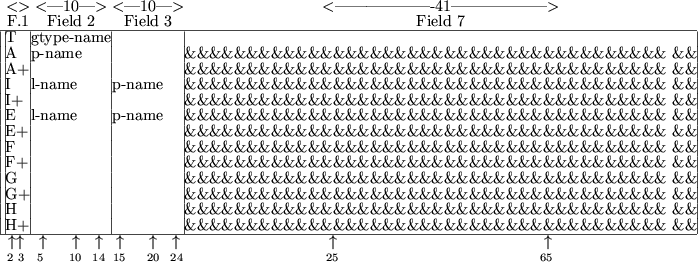
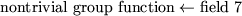
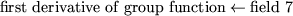
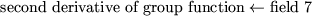

Next: 5.3 Two Further Examples
Up: 5.2 Data Cards
Previous: 5.2 Data Cards
5.2.1 The INDIVIDUALS Data Cards
The INDIVIDUALS
indicator card is used to announce the definition of function and
derivative
values for the types of
nontrivial group functions
required. The syntax for data cards
following the indicator card is given in Figure 5.2.1.
Figure 5.3:
Possible data cards for INDIVIDUALS
|  |
The one- or two-character string in field 1 specifies the type of data
contained on the card.
Possible values for the first character of the string are:
- T
- This card announces that a new group type
is to be considered. The
string gtype-name in field 2 gives the name of the group type;
the name may be up to ten characters long and must have been defined
in the GROUP TYPE
section of the SDIF file (see Section 3.2.16).
- A
- This card announces that an auxiliary parameter, specific to the
current group type,
is to be assigned a value. The string p-name in field 2 gives the name of the auxiliary parameter that is
to be defined; this name must be a valid Fortran name,
see Section 3.1.2, and have been previously defined in the TEMPORARIES
section. The string in field 7 is an arithmetic expression. The
assignment
is made; any variable mentioned in the arithmetic expression must
either be reserved (see Section 5.2), or have been defined in
the TEMPORARIES
section. If, in this latter case, the variable
is integer or real, it must have been allocated a value itself either
on a previous GLOBALS
data card
or on a previous A
card for the current element type
in the INDIVIDUALS
section.
- I
- This card announces that an auxiliary parameter, specific to the
current group type,
is to be assigned a value whenever a second
logical auxiliary parameter has the value .TRUE. The string,
p-name, in field 3 gives the name of the auxiliary parameter
that is to be defined; this name must be a valid Fortran name,
see
Section 3.1.2, and have been previously defined in the TEMPORARIES
section. The string in field 7 is an arithmetic expression. The
assignment
will be made if and only if the logical auxiliary parameter,
l-name, specified in field 2 has the value .TRUE.; the logical
parameter must have been previously defined in the TEMPORARIES
section and allocated a value in the GLOBALS
or INDIVIDUALS
section. The arithmetic expression must obey the rules
set out in the A
section above.
- E
- This card
announces that an auxiliary parameter, specific to the
current group type,
is to be assigned a value whenever a second
logical auxiliary parameter
has the value .FALSE. The string,
p-name, in field 3 gives the name of the auxiliary parameter
that is to be defined; this name must be a valid Fortran name,
see
Section 3.1.2, and have been previously defined in the TEMPORARIES
section. The string in field 7 is an arithmetic expression. The
assignment
will be made if and only if the logical auxiliary parameter,
l-name, specified in field 2 has the value .FALSE.; the logical
parameter
must have been previously defined in the TEMPORARIES
section and allocated a value in the GLOBALS
or INDIVIDUALS
section. The arithmetic expression must obey the rules set out in the
A
section above.
- F
- This card
specifies the value of the nontrivial group.
The string in
field 7 is an arithmetic expression; the assignment

is made; any variable mentioned in the expression must obey the rules
set out in the A
section above.
- G
- This card
specifies the value of the first derivative
of the nonlinear group function with respect to its group-type
variable.
The string in field 7 is an arithmetic expression; the
assignment

is made; any variable mentioned in the arithmetic expression must obey
the rules set out in the A
section above.
- H
- This card
specifies the value of the second derivative of the the
nonlinear group function with respect to its group-type variable.
The
string in field 7 is an arithmetic expression; the assignment

is made; any variable mentioned in the arithmetic expression must obey
the rules set out in the A
section above.
The data started on an A, I, E, F, G and
H card
may be continued on a card whose first field contains an
A+, I+, E+, F+, G+ or H+
respectively.
Such cards
contain an arithmetic expression in field 7 and no further
data; the arithmetic expression must obey the rules set out in the
A section above. At most nineteen continuations of a single
assignment are allowed.
The data for a single group type
must occur on consecutive cards and
in the order given in Figure 5.3. A new group type is deemed
to have started whenever a T
card is encountered. The F
card
is compulsory for all group types.
Next: 5.3 Two Further Examples
Up: 5.2 Data Cards
Previous: 5.2 Data Cards